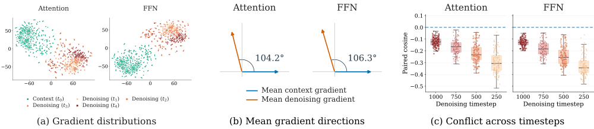
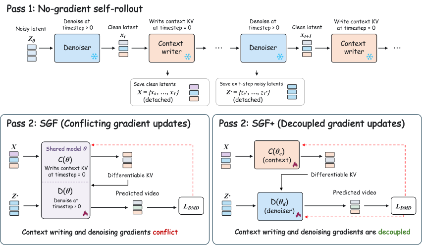

Self Gradient Forcing PlusDecoupling Gradient Flows for Autoregressive Video Generation
1Tsinghua University2Joy Future Academy, JD3The Chinese University of Hong Kong
* Equal contribution † Corresponding authors
SGF+ separates context-writing and denoising parameters to resolve conflicting gradient updates, improving autoregressive video generation and enabling rollouts of up to 24 hours from only 5s training windows.
Abstract

Autoregressive video models must both denoise current frames and write context for future predictions. Self Gradient Forcing (SGF) restores context-writing gradients, but these gradients conflict with denoising updates on shared parameters.
Self Gradient Forcing Plus (SGF+) assigns independent parameters to the two roles and trains them jointly with the original objective. It improves visual quality and long-horizon consistency in both framewise and chunkwise generation, supporting continuous generation for up to 24 hours from only 5s training rollouts.
Method
Autoregressive video generation has two roles: writing context for future predictions and denoising the current frames. SF blocks context-writing gradients; SGF restores them on shared parameters. SGF+ assigns independent parameter sets to the two roles, separating their gradient updates while training both jointly with the original objective.
Context writing and denoising exhibit distinct gradient distributions in both Attention and FFN. Across 128 prompts and four denoising timesteps, all 512 paired cosine similarities are negative in each module family. These conflicting updates partially cancel on shared weights, motivating SGF+’s role-specific parameters.

View layer-wise gradient distributionsHide layer-wise gradient distributions


The two-pass training procedure first records a no-gradient autoregressive rollout. A second pass reconstructs the forward computation from detached context and noisy target latents, allowing future-generation losses to supervise context writing through differentiable KV states. SGF+ routes context-writing and denoising gradients to their respective parameter sets.

SEE THE DIFFERENCE
Same prompt. Same timeline.
A train journey
A woman in a kimono, seated inside a moving train.
Full generation prompt
Explore the scenes
16 scenes · Scroll for more ↓QUANTITATIVE RESULTS
Long-horizon generation.
| Method | Subject | Background | Flickering | Motion | Dynamics | Aesthetics | Imaging |
|---|
All scores are multiplied by 100, higher is better. Bold indicates the highest score in each column. 60s: VBench-Long prompts. 240s: MovieGen-128 prompts.
Scene jumps and deformation can inflate Dynamic Degree, while SGF+ exhibits less error accumulation and greater scene stability.
NATIVE TEMPORAL EXTRAPOLATION
From 5-second training
to 24-hour generation.
Continuous SGF+ rollouts
without long-video fine-tuning.
Citation
@misc{su2026sgfplus,
title = {{SGF+}: Decoupling Gradient Flows for Autoregressive Video Generation},
author = {Su, Zihan and Zhuang, Junhao and Li, Yaowei and Lu, Siwen and Li, Haoran and
Li, Lingen and Wu, Haoyu and Jin, Weiyang and Zhang, Songchun and
Huang, Haoyang and Yuan, Chun and Xue, Zeyue and Duan, Nan},
year = {2026}
}